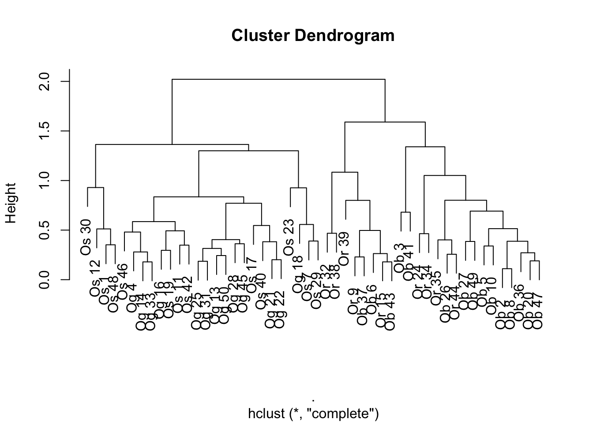
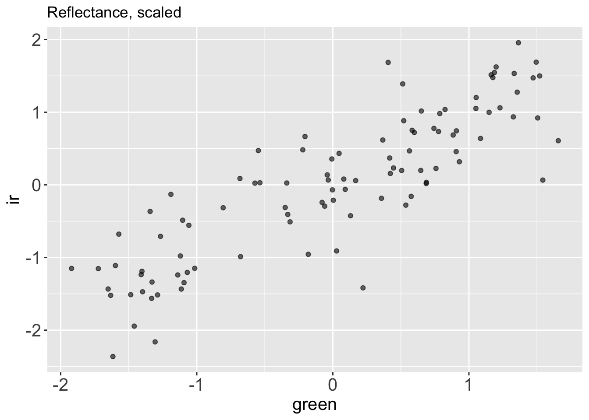

library(dplyr)
library(readr)
library(magrittr)
library(tidyr)
library(palmerpenguins)
library(tibble)
library(ggplot2)
library(readr)
library(here)
library(stringr)
library(broom)
theme_update(axis.title = element_text(size = 15),
axis.text = element_text(size = 15),
strip.text = element_text(size = 15))Explore your Data with Clustering and PCA
üößWork in Progress‚ö†Ô∏è
1 Use Statistical Models to Explore Your Data
1.1 Data
We will keep working on the rice dataset.
rice <-
paste0('https://raw.githubusercontent.com/othomantegazza',
'/mawazo-summer-school/main/data-int/rice.csv') %>%
read_delim(delim = ';') %>%
janitor::clean_names()Rows: 1140 Columns: 18
── Column specification ────────────────────────────────────────────────────────
Delimiter: ";"
chr (6): Id, Species, Accession Name, Origine Continent, Type (Wild/Cultiva...
dbl (12): Replicate_nb (1/2), Plant_nb (1 to 3), Panicle_nb (1 to 3), Rachis...
ℹ Use `spec()` to retrieve the full column specification for this data.
ℹ Specify the column types or set `show_col_types = FALSE` to quiet this message.# define colors
rice_colors <-
c(Or = '#b5d4e9',
Os = '#1f74b4',
Ob = '#c0d787',
Og = '#349a37')rice_simple <-
rice %>%
sample_n(50)
rice_simple %>%
select(species, rachis_length_rl_in_cm:spikelet_number_sp_n) %>%
mutate(species = paste(species, 1:n())) %>%
column_to_rownames('species') %>%
mutate_all(~scales::rescale(., to = c(0,1), from = range(.))) %>%
dist() %>%
hclust() %>%
plot()
rice_simple %>%
select(species, rachis_length_rl_in_cm:spikelet_number_sp_n) %>%
mutate(species = paste(species, 1:n())) %>%
column_to_rownames('species') %>%
mutate_all(~scales::rescale(., to = c(0,1), from = range(.))) %>%
as.matrix() %>%
heatmap()With superheat?
rice_pc <-
rice %>%
select(species, rachis_length_rl_in_cm:spikelet_number_sp_n) %>%
mutate(species = paste(species, 1:n())) %>%
column_to_rownames('species') %>%
# mutate_all(~scales::rescale(., to = c(0,1), from = range(.))) %>%
prcomp(center = T, scale = T)rice_pc_data <-
rice_pc %>%
augment() %>%
bind_cols(rice)rice_pc_data %>%
ggplot(aes(x = .fittedPC1,
y = .fittedPC2,
colour = species)) +
geom_point() +
scale_color_manual(values = rice_colors)
rice_pc$sdev[1] 2.0456555 1.2842683 1.0533272 0.9646701 0.7491605 0.5211812 0.4553862
[8] 0.2487671 0.1540413rice_pc$rotation %>%
as.data.frame() %>%
rownames_to_column(var = 'measurement') %>%
pivot_longer(-measurement,
names_to = 'component',
values_to = 'rotation') %>%
filter(component %in% c('PC1', 'PC2')) %>%
ggplot(aes(y = measurement,
x = rotation)) +
geom_col() +
facet_grid(rows = vars(component))